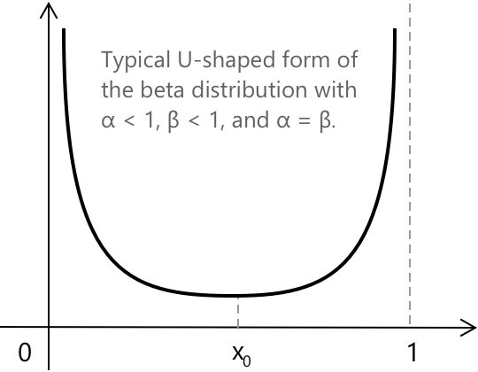
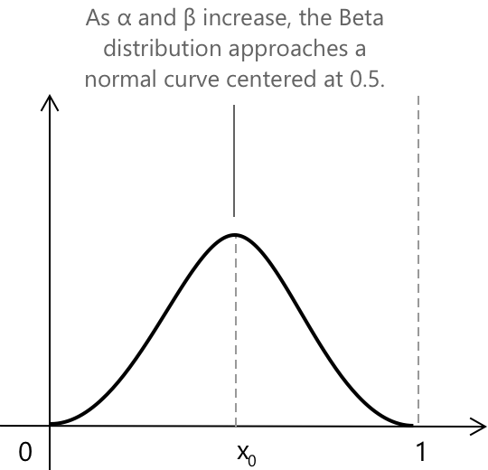

Бета-розподіл
Вступ до бета-розподілу
Бета-розподіл — це неперервний розподіл ймовірностей, визначений на відкритому проміжку \( (0, 1) \). Він залежить від двох додатних чисел, \( \alpha \) та \( \beta \), які визначають, як вигинається крива і як її маса розподілена вздовж проміжку. Оскільки він набуває значень лише від \(0\) до \(1\), його часто використовують для опису випадкових величин, що представляють пропорції, відношення або ймовірності — ситуацій, де результати природно обмежені цими межами. У формальних термінах бета-розподіл визначається наступною функцією щільності ймовірності:
\[ B(x; \alpha, \beta) = \frac{x^{\alpha - 1}(1 - x)^{\beta – 1}}{B(\alpha, \beta)} \quad 0 < x < 1 \]
де \( B(\alpha, \beta) \) — бета-функція, пов'язана з гамма-функцією наступним чином:
\[ B(\alpha, \beta) = \frac{\Gamma(\alpha)\Gamma(\beta)}{\Gamma(\alpha + \beta)} \]
Отже, функцію щільності ймовірності також можна записати явно через гамма-функцію як:
\[ B(x; \alpha, \beta) = \frac{\Gamma(\alpha + \beta)}{\Gamma(\alpha)\Gamma(\beta)} \, x^{\alpha - 1}(1 - x)^{\beta – 1} \]
при цьому \( B(x; \alpha, \beta) = 0 \) для \( x \notin (0, 1) \). Сама гамма-функція \( \Gamma(c) \) для кожного \( c \in \mathbb{R}^+, \) визначається наступним інтегральним представленням:
\[ \Gamma(c) = \int_{0}^{+\infty} x^{c - 1} e^{-x} \, dx \]
Гамма-функцію можна розглядати як неперервне продовження факторіала, який визначений лише для натуральних чисел, на всі додатні дійсні значення.
Форма бета-розподілу
Форма бета-розподілу залежить від значень його параметрів \( \alpha \) та \( \beta \). Залежно від їхньої величини, розподіл може набувати різних форм: унімодальної, U-подібної або монотонної. Розподіл досягає своєї моди в точці
\[ x_0 = \frac{\alpha – 1}{\alpha + \beta – 2} \]
- Якщо \( \alpha > 1 \) і \( \beta > 1 \), розподіл має моду в точці \( x_0 \), що відповідає точці максимуму функції щільності.
- Якщо \( \alpha < 1 \) і \( \beta < 1 \), функція має мінімум у тій самій точці.
- При всіх інших комбінаціях параметрів розподіл є монотонним.
- Коли \( \alpha = \beta \), розподіл є симетричним відносно вертикальної прямої \( x = x_0 = \tfrac{1}{2} \).
На малюнку проілюстровано одну з можливих форм бета-розподілу, коли обидва параметри \( \alpha \) та \( \beta \) менші за 1 і рівні між собою. У цій конфігурації розподіл набуває характерної U-подібної форми, при якій щільність прямує до нескінченності біля меж проміжку \( (0, 1) \). Можна помітити точку мінімуму, розташовану в \( x = x_0 \), що відповідає найнижчому значенню щільності ймовірності в області визначення.

Цікавий випадок виникає, коли два параметри рівні, тобто \( \alpha = \beta \), і обидва більші за \(1\). У цій ситуації бета-розподіл стає симетричним відносно вертикальної прямої \( x = \tfrac{1}{2} \) і набуває унімодальної (тобто кривої з одним піком), дзвоноподібної форми з одним центральним піком. У міру збільшення значень \( \alpha \) та \( \beta \) крива стає прогресивно вужчою і дедалі більше нагадує нормальний розподіл з центром у точці \( x = 0.5 \).

Якщо бути точнішим, це асимптотичне наближення, яке виконується для великих значень \( \alpha \) та \( \beta \). Для достатньо великих параметрів бета-розподіл може бути наближений нормальним розподілом з:
\[ \mu = \frac{\alpha}{\alpha + \beta} \] \[ \sigma^2 = \frac{\alpha \beta}{(\alpha + \beta)^2 (\alpha + \beta + 1)} \]
У симетричному випадку, де \( \alpha = \beta = k \), маємо:
\[ \mu = \tfrac{1}{2} \quad \sigma^2 = \frac{1}{8(2k + 1)} \approx \frac{1}{16k} \]
Отже, при \( k \to \infty \):
\[ \mathrm{B}(x; k, k) \approx \mathcal{N}\!\left(\tfrac{1}{2}, \tfrac{1}{8(k + 1)}\right) \]
Ключові особливості
-
\[\text{1. } \quad f(x) = \frac{x^{\alpha – 1}(1 – x)^{\beta - 1}}{B(\alpha, \beta)} \quad 0 \le x \le 1 \]
-
\[\text{2. } \quad \mu = E(X) = \frac{\alpha}{\alpha + \beta} \]
-
\[\text{3. } \quad \sigma^{2} = \mathrm{Var}(X) = \frac{\alpha \beta}{(\alpha + \beta)^{2}(\alpha + \beta + 1)} \]
-
\[\text{4. } \quad \sigma = \sqrt{\frac{\alpha \beta}{(\alpha + \beta)^{2}(\alpha + \beta + 1)}} \]
Кожен вираз підкреслює ключову властивість бета-розподілу, показуючи, як його форма залежить від параметрів \(\alpha\) та \(\beta\), і як його середнє значення та мінливість відображають баланс між цими двома параметрами форми.
Середнє значення бета-розподілу
Середнє значення, або математичне сподівання бета-розподілу представляє середнє значення випадкової змінної, визначеної на проміжку \( (0, 1) \), залежно від параметрів форми \( \alpha \) та \( \beta \). Формально, середнє значення отримують із загального означення математичного сподівання:
\[ \mu = E(X) = \int_{0}^{1} x \, B(x; \alpha, \beta) \, dx \]
Підставляючи функцію щільності ймовірності бета-розподілу, маємо:
\[ E(X) = \int_{0}^{1} x \, \frac{x^{\alpha - 1} (1 - x)^{\beta – 1}}{B(\alpha, \beta)} \, dx \]
що спрощується до:
\[ E(X) = \frac{1}{B(\alpha, \beta)} \int_{0}^{1} x^{\alpha} (1 – x)^{\beta - 1} \, dx \]
Помітивши, що інтеграл у правій частині сам по собі є бета-функцією \( B(\alpha + 1, \beta) \), отримаємо:
\[ E(X) = \frac{B(\alpha + 1, \beta)}{B(\alpha, \beta)} \]
Використовуючи тотожність, що пов'язує бета- та гамма-функції, отримаємо:
\[ B(\alpha, \beta) = \frac{\Gamma(\alpha)\Gamma(\beta)}{\Gamma(\alpha + \beta)} \]
Отже, середнє значення можна виразити як:
\[ E(X) = \frac{\alpha}{\alpha + \beta} \]
Звідси, середнє значення бета-розподілу залежить тільки від двох параметрів форми та виражає баланс між ними.
Дисперсія бета-розподілу
Дисперсія бета-розподілу вимірює, наскільки випадкова змінна відхиляється від свого середнього значення. У той час як середнє значення описує центральну тенденцію розподілу, дисперсія кількісно визначає його розсіяння — тобто, наскільки концентрованими або розсіяними є можливі результати в межах проміжку \( (0, 1) \). Формально, дисперсія визначається як:
\[ \sigma^2 = \mathrm{Var}(X) = E(X^2) - [E(X)]^2 \]
Починаючи з функції щільності ймовірності бета-розподілу:
\[ B(x; \alpha, \beta) = \frac{x^{\alpha - 1} (1 - x)^{\beta – 1}}{B(\alpha, \beta)} \]
вираз можна переписати як:
\[ \begin{align} E(X^2) &= \int_{0}^{1} x^2 f(x; \alpha, \beta) \, dx \\ &= \frac{1}{B(\alpha, \beta)} \int_{0}^{1} x^{\alpha + 1} (1 – x)^{\beta - 1} \, dx \\[12 pt] &= \frac{B(\alpha + 2, \beta)}{B(\alpha, \beta)} \end{align} \]
Підставляючи цей вираз та середнє значення у формулу, отримуємо:
\[ \sigma^2 = \frac{B(\alpha + 2, \beta)}{B(\alpha, \beta)} – \left(\frac{\alpha}{\alpha + \beta}\right)^2 \]
Використовуючи зв'язок між бета- та гамма-функціями:
\[ B(\alpha, \beta) = \frac{\Gamma(\alpha)\Gamma(\beta)}{\Gamma(\alpha + \beta)} \]
отримаємо спрощений вираз для дисперсії:
\[ \sigma^2 = \frac{\alpha \beta} {(\alpha + \beta)^2 (\alpha + \beta + 1)} \]
Коли \( \alpha \) та \( \beta \) збільшуються разом, дисперсія зменшується, що призводить до того, що розподіл стає більш концентрованим навколо свого середнього значення.
Зв'язок між бета-розподілом та рівномірним розподілом
Рівномірний розподіл можна розглядати як особливий випадок бета-розподілу. Коли обидва параметри дорівнюють одиниці, тобто \( \alpha = \beta = 1 \), функція щільності ймовірності бета-розподілу стає сталою на проміжку \( (0, 1) \). У загальному випадку неперервний рівномірний розподіл, визначений на проміжку \( (a, b) \), задається наступним чином:
\[ f(x) = \begin{cases} \dfrac{1}{b – a} & a < x < b \\[10pt] 0 & \text{в іншому випадку} \end{cases} \]
Для \( a = 0 \) та \( b = 1 \) цей вираз зводиться до \( f(x) = 1 \), що точно відповідає розподілу \(B(1, 1)\). У цьому випадку два параметри бета-розподілу набувають значень \( \alpha = 1 \) та \( \beta = 1 \), що створює сталу щільність ймовірності на проміжку \(0, 1\).